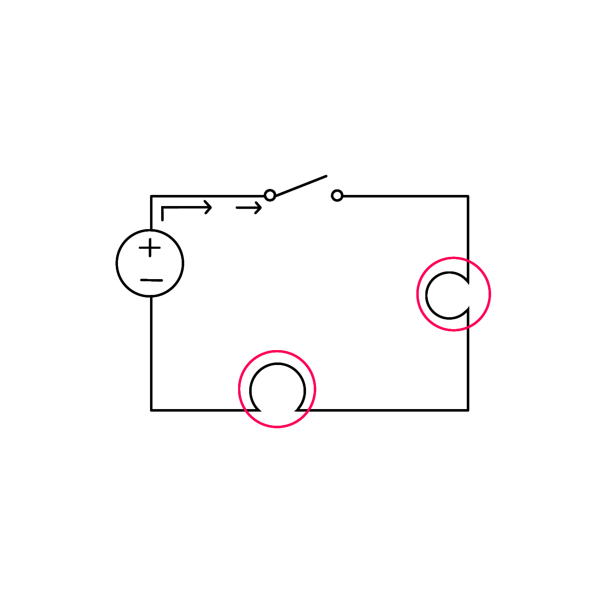
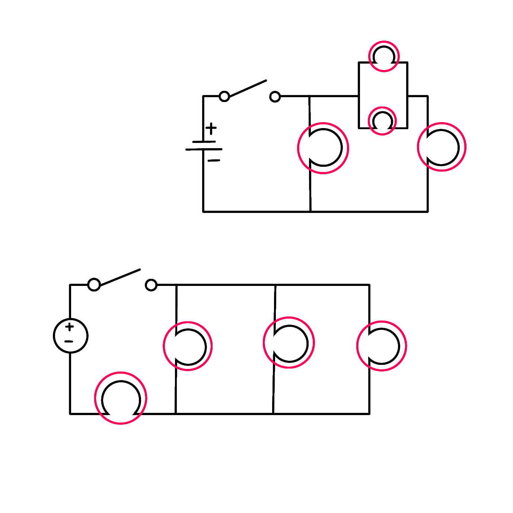
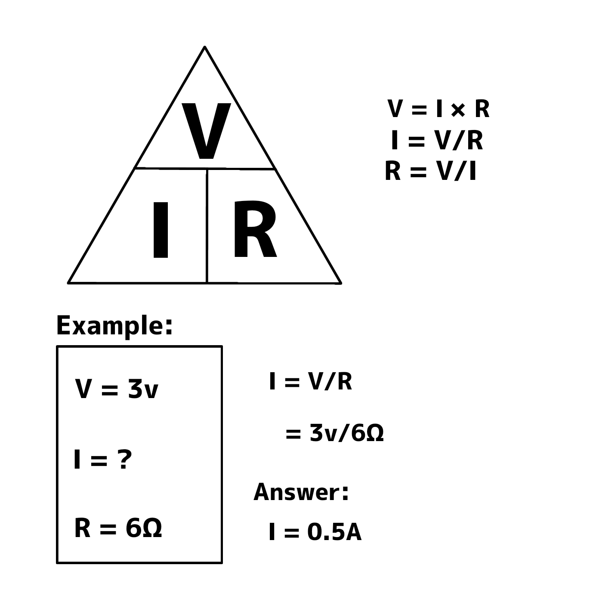
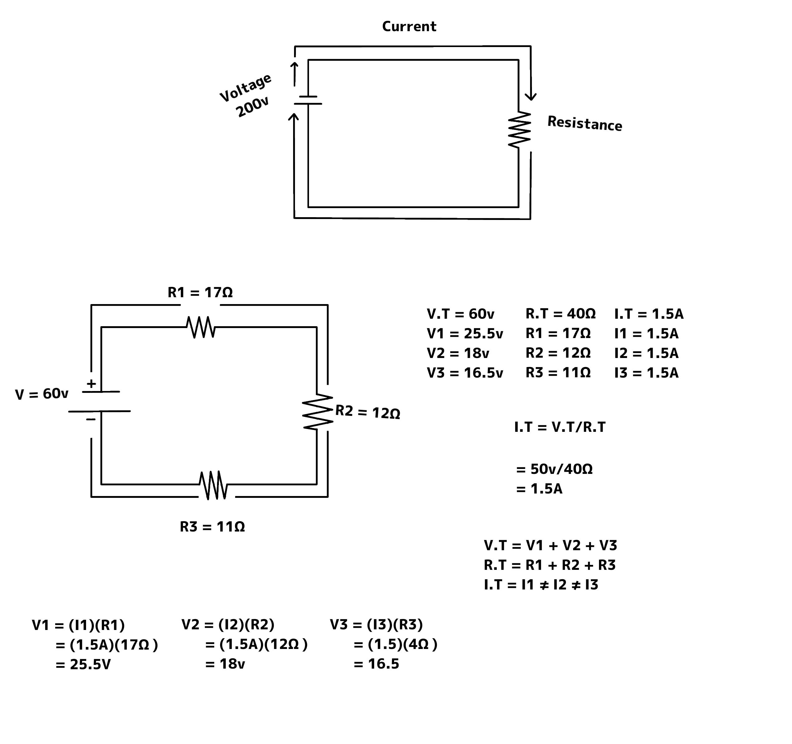
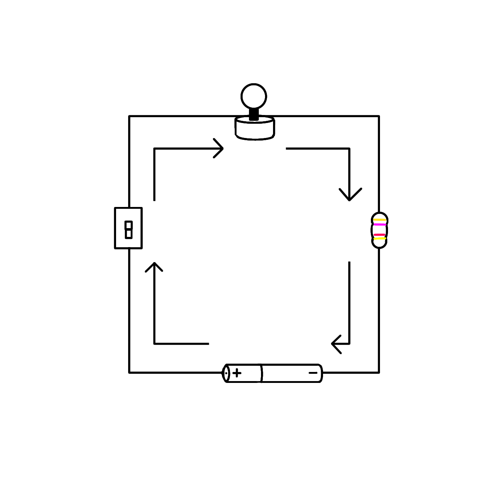
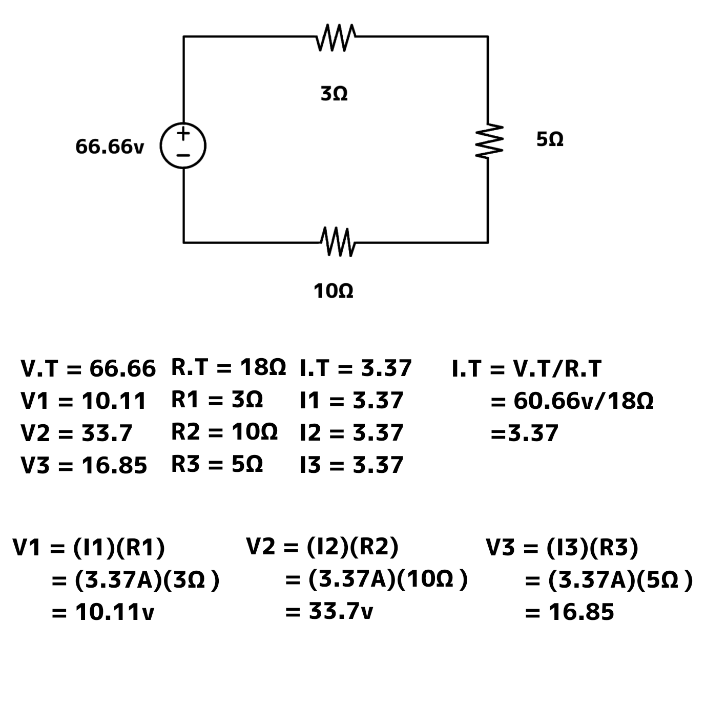
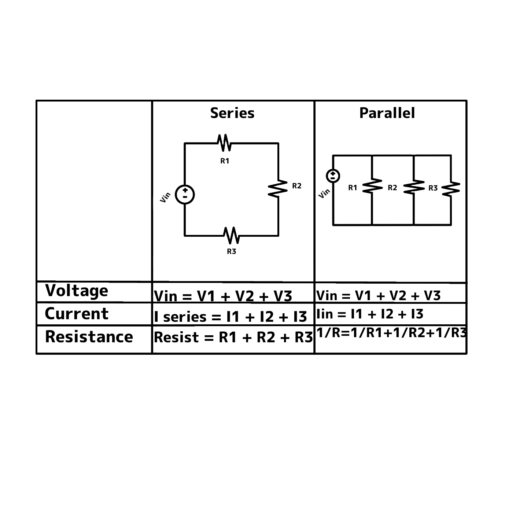

1. Unplug your computer
2. Discharge yourself for 15 to 30 sec
3. Remove side cover
4. Disconnect Connectors
5. Remove Standarlone Fan
6. Remove Storage Drive
7. Remove Memory Modules
8. Remove Power Supply Unit
9. Remove Motherboard Adapter
10. Remove Motherboard
- These are practices/techniques to you from injyries, truama, disorders, repretitive stress or any health issues.
- These are tipsbon how to lighten your computer works and make your work faster and became more efficient.
AT THE END OF THE REASON STUDENTS WERE ABLE TO:
1. Identify different computer
ergonimic tips.
2. Understand the importance of knowi ng the computer ergonomics.
3. Value the importance of computer ergonomics.
1. Level your eyes on the upper part of the screen.
2. Elbow and arms must be forming 45 degrees angle towards
keyboard.
3. Knees and legs must form a 45 degrees angle.
4. Chair height must set properly with your feet flat on the floor.
A series Circuits is a type of electronic circuit in which the components are connected end-to-end in a single path.
A parallel Circuit is a type of electronic circuit in which the components are connected in multiple paths.
- Ohm's law is a fundemendal law in basic electronics that describes the relationship between voltage, current, and resistance in an electronic circuit.
- It states that the current flowing through a conductor is directly proportional to the voltage applied a cross id, and inversely proportional to the resistance of the conductor. Developed by Geong Ohm law.
Ohm's Law
Close Circuit a closed circuit is one that is complete with good continulty throughout.
Open Circuit an open circuit is one where the contiranity has been broken by an interruption in the path for current to flow.
Short Circuit when both points (+&-) of voltage source, in a gets tent is each other for some reason then circuit is is called short circuit.
Ohm's law is a fundamental law in basic electronics describes the relationship between voltage, current, and resistance in an electronic circuit It states that the current flowing through a conductor is directly proportional to the voltage applied across it, and inversely proportional to the resistance of the conductor.
Voldage - is the pressure from an electrical circuits power force that pushes charged electrons (current) through value conducting loop enabling them to do work such an illuminating a light.
Voltage = Pressure measured by volte (v)Current - is the flow of electrons through a complete circuit of conductors.
Current = flow measured by ampere (amp)Symbols used For AMP's A- Amper for a large amount of current (1.000). M.A-Milliamperes a thouganpth of an AMP (0.001) MICYO A-b- Microamperes a millionth of am AMP(0.000001)
Resistance - is a measure of the opposition do current flow in an electrical circuit.
* As Materials cost current flow to some degree they fall into one of two good categories.
* Conductore Maderials that offer very littles resistance where electrons can move easily examples silver, copper, Gold, and aluminum
Imboladorn materials the Prevent high Resistance and restrict "the flow of electrone example : rubber, paper, glass, wood and plastic.
- Resistance measurements are normally taken do indicade the condition of a component or a circuit.
- The higher the resistance the lower the current flow it adnanally high one possible cause among many, could be damaged conductors one to burning on confusion all an conductors give of some degree of head go overheading is an issue often associated with residence.
- The lower the resistance the higher the current flow possible couse insulators damaged by moisture or overheading.

Sample schamatic diagram of a Parallel Circuit

